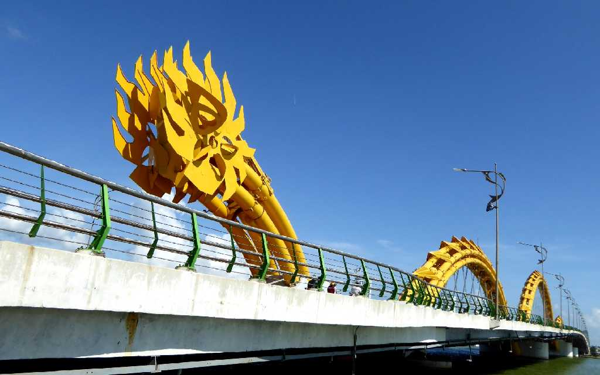
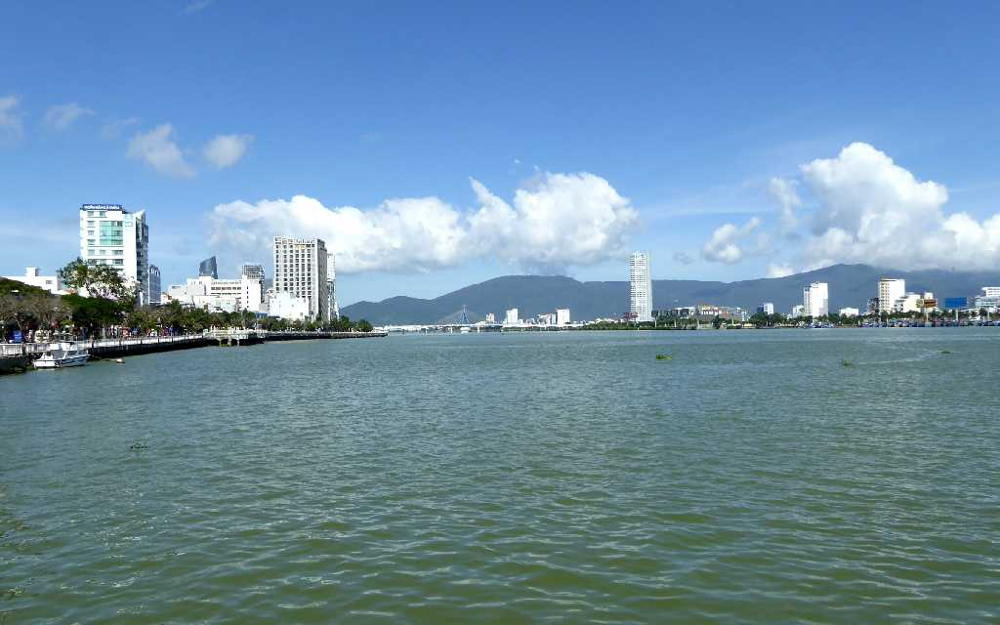
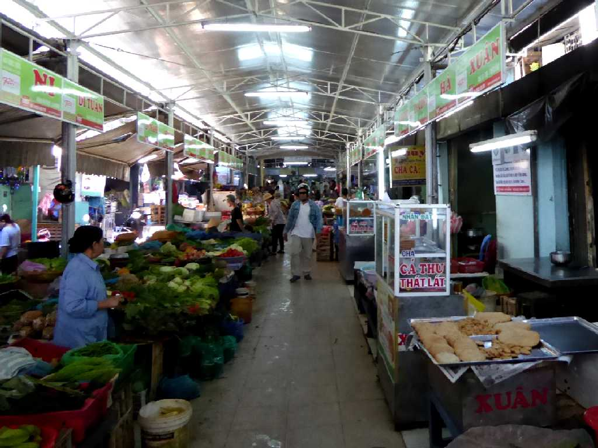
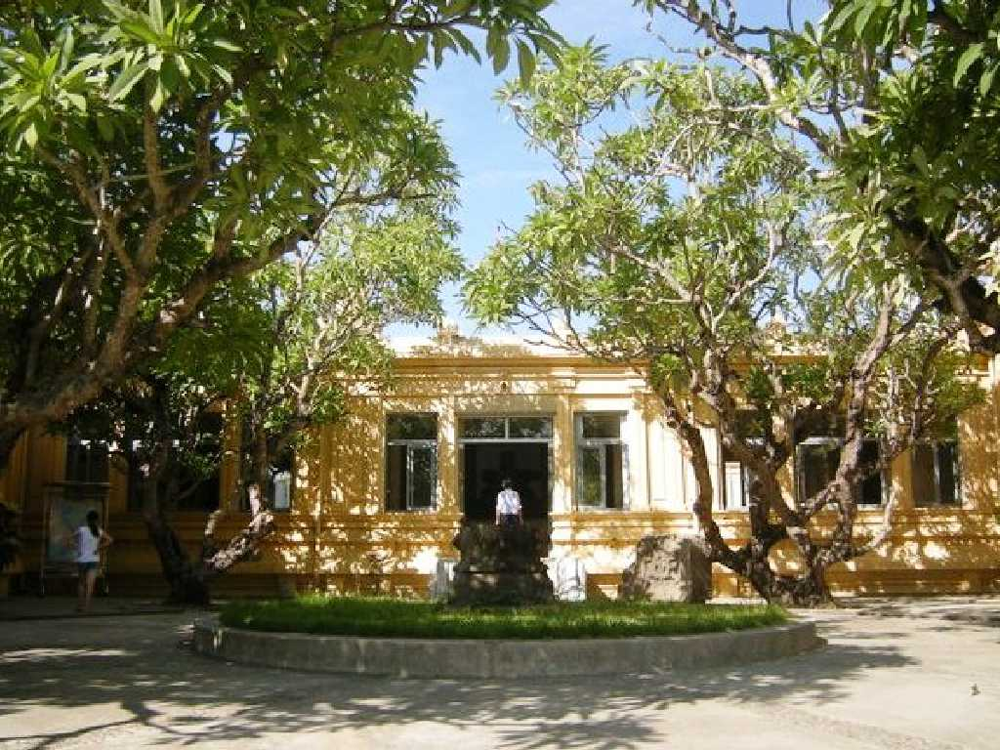
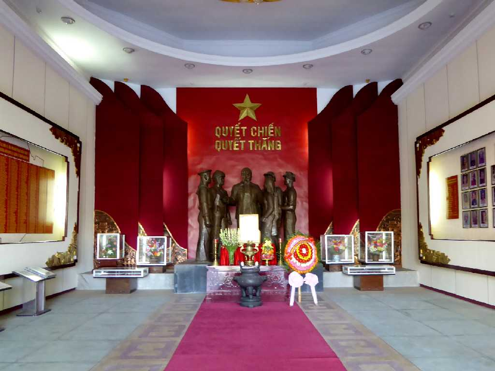
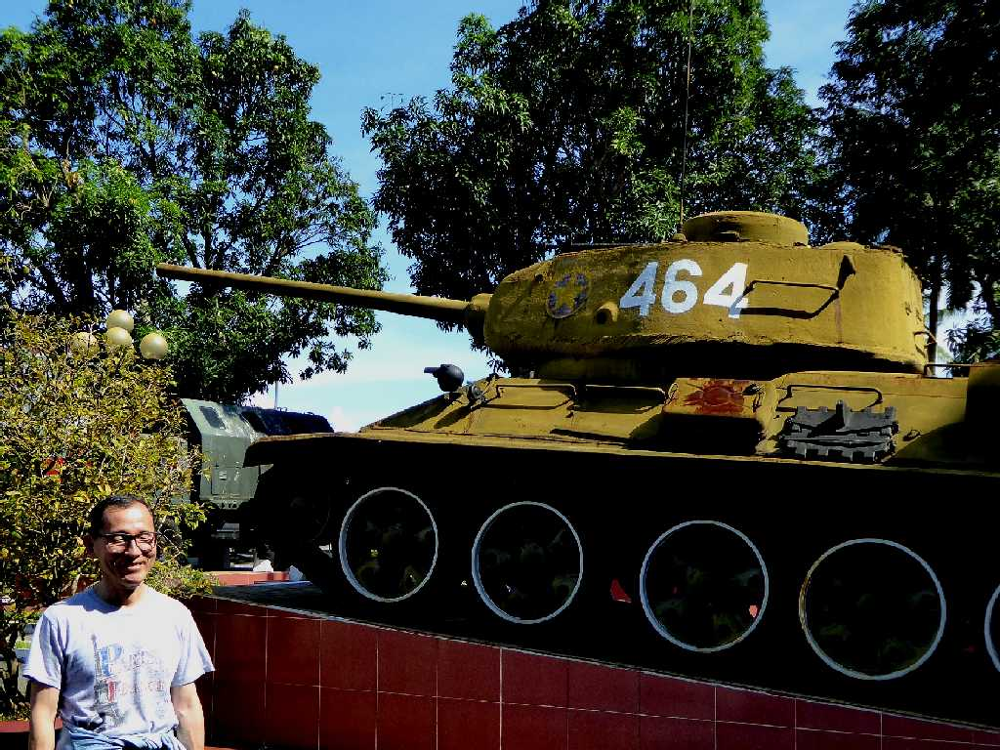
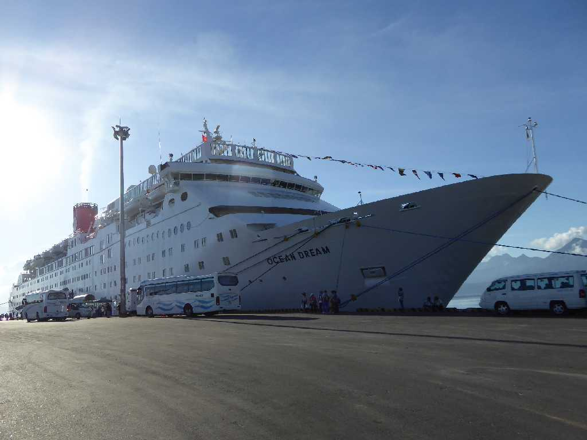

August 8 2010 SS Oceanic in Tien Sa Port Đà Nẵng
ホイアン港が砂の堆積により大型船が入港できなくなり始めた１８世紀から小漁村の港が大規模化し１８３５年の欧州船に対するダナン入港の勅令によりベトナム中部最大の港となった

Cầu Rồng (Dragon Bridge) Đà Nẵng
５年ぶりの再訪問でダナン市街のハン川に新たに架けられた全長６６６ｍ幅３８ｍのドラゴン橋

Sông Hàn Đà Nẵng

Chợ Hàn Đà Nẵng

Bảo tàng Chăm Đà Nẵng
Bình Hiên Bảo tàng Chăm
Bảo tàng khu 5 Đà Nẵng

Bảo tàng khu 5

December 25 2015 Bảo tàng khu 5

Tiên Sa Port
地球一周の船旅出港９日目４,１３５ｋｍ航行しダナン港に着岸